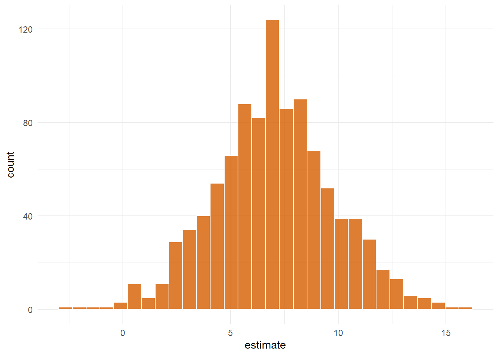
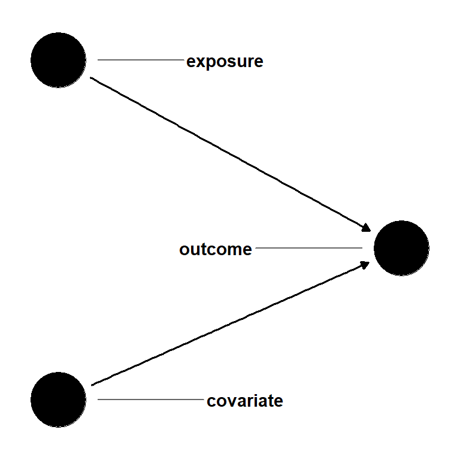

注记Work-in-progress 🚧
You are reading the work-in-progress first edition of Causal Inference in R. This chapter is mostly complete, but we might make small tweaks or copyedits.
Fitting the weighted outcome model · 原书逐章中译
来源：Malcolm Barrett、Lucy D’Agostino McGowan、Travis Gerke，Causal Inference in R · Fitting the weighted outcome model。 本页为中文翻译；原书代码块、公式、图表交叉引用和引用键均按原文保留。统计图在网页渲染时由 R 代码生成，静态插图直接引用原文件。 原书仓库采用 CC BY-NC-SA 4.0；代码采用 MIT 许可。请遵守原许可证并注明作者。
You are reading the work-in-progress first edition of Causal Inference in R. This chapter is mostly complete, but we might make small tweaks or copyedits.
倾向评分工作流将我们的工作分为两部分：暴露模型，即设计阶段；以及结局模型。结局模型基于设计阶段的准备工作，估计因果效应。对于许多结局模型来说，这一阶段比设计阶段简单得多：像平时一样拟合回归模型，但不纳入混杂因子。我们不把混杂因子放进模型，而是使用匹配数据集，或使用倾向评分权重对结局模型加权。不过，这里有个问题：大多数回归工具包默认提供的标准误没有考虑设计阶段。因此，它们往往会给出不正确的不确定性估计。本章将介绍如何在匹配数据集和加权数据集中使用结局模型，并探索几种计算标准误的方法。
在匹配数据集上拟合结局模型时，我们只保留原始数据中成功匹配的观测，然后像通常一样在这些数据上拟合模型。就这么简单！例如，像 使用倾向评分 中那样重新进行匹配，我们将匹配到的观测提取到名为 matched_data 的数据集中。
library(broom)
library(touringplans)
library(MatchIt)
seven_dwarfs_9 <- seven_dwarfs_train_2018 |>
filter(wait_hour == 9)
matchit_obj <- matchit(
park_extra_magic_morning ~ park_ticket_season +
park_close +
park_temperature_high,
data = seven_dwarfs_9
)
matched_data <- get_matches(matchit_obj)请记住，在匹配时，我们试图找到数据的一个子集，使因果推断的假设（尤其是可交换性）成立。如果成功做到这一点，就可以在不加入额外协变量的情况下比较两组的等待时间差异，就像在随机试验中一样。把协变量纳入结局模型还有其他充分理由，包括提高精确度、处理异质性处理效应，以及（正如我们将看到的）获得正确的标准误；不过现在，我们先关注眼前这个简单问题：有 Extra Magic Mornings 是否会改变上午 9 点到 10 点之间公布的等待时间？
要回答这个问题，我们用匹配数据集拟合线性回归。这里，结局是公布的等待时间，暴露是 Extra Magic Mornings。
matched_outcome <- lm(
wait_minutes_posted_avg ~ park_extra_magic_morning,
data = matched_data
)
matched_outcome |>
tidy(conf.int = TRUE)# A tibble: 2 x 7
term estimate std.error statistic p.value conf.low
<chr> <dbl> <dbl> <dbl> <dbl> <dbl>
1 (Inte~ 67.0 2.37 28.3 1.94e-54 62.3
2 park_~ 7.87 3.35 2.35 2.04e- 2 1.24
# i 1 more variable: conf.high <dbl>回想一下，默认情况下，{MatchIt} 会寻找观测对，以帮助我们估计处理组的平均处理效应。这意味着，在有 Extra Magic Mornings 的那些日子中，Extra Magic Mornings 对上午 9 点到 10 点之间平均公布等待时间的预期影响为 7.9 分钟（95% CI：1.2-14.5）。
使用匹配数据进行回归很直接；不过，lm() 并不知道我们事先用 MatchIt 预处理过数据。这样做会使匹配对之间产生依赖。要得到正确的标准误，我们必须考虑这种聚类 (Abadie 和 Spiess 2022)。这比加权时稍微复杂一些——事实上，它会建立在我们用于 IPW 的方法之上——因此，我们会等到 校正匹配结局模型的标准误 再解决这个问题。
在结局模型中使用倾向评分权重只需多一步：在拟合模型时，告诉回归函数使用这些权重。
在前面的例子中，我们使用了 ATE 权重；不过，这里将使用 ATT 权重，使效应估计值可以与上面的基于匹配的分析相比较。我们的流程与前面计算倾向评分权重的方法完全相同，只是改用 propensity::wt_att()。
library(propensity)
propensity_model <- glm(
park_extra_magic_morning ~ park_ticket_season +
park_close +
park_temperature_high,
data = seven_dwarfs_9,
family = binomial()
)
seven_dwarfs_9_with_wt <- propensity_model |>
augment(type.predict = "response", data = seven_dwarfs_9) |>
mutate(w_att = wt_att(.fitted, park_extra_magic_morning))我们可以使用 weights 参数拟合加权结局模型。注意，在加权时，data 参数仍然使用完整数据集（seven_dwarfs_9_with_wt），这与匹配不同；匹配只使用匹配后的子集。相反，我们平滑地组合每个观测的信息，构造出一个（希望）不存在混杂的伪总体。
weighted_outcome <- lm(
wait_minutes_posted_avg ~ park_extra_magic_morning,
data = seven_dwarfs_9_with_wt,
weights = w_att
)
weighted_outcome |>
tidy()# A tibble: 2 x 5
term estimate std.error statistic p.value
<chr> <dbl> <dbl> <dbl> <dbl>
1 (Intercept) 68.7 1.45 47.3 1.69e-154
2 park_extra_ma~ 6.23 2.05 3.03 2.62e- 3weights
MatchIt 返回一个包含 weights 变量的数据框。在上面的例子中，所有权重都是 1：
unique(matched_data$weights)[1] 1不过，某些匹配方案（例如完全匹配）也使用权重。由于这些权重要么有用（如完全匹配中的权重），要么无害（如每个人权重相等），MatchIt 软件包的作者建议始终在结局模型中设置 weights = weights。在前面的情形中，我们也可以拟合：
matched_outcome <- lm(
wait_minutes_posted_avg ~ park_extra_magic_morning,
data = matched_data,
weights = weights
)同样，这些权重全都是 1，因此结果完全相同。不过，如果你考虑采用其他匹配方法，确保正确指定结局模型是一种稳妥的做法。匹配本身可以看作一种极端的加权形式：每个有匹配对象的人获得非零权重，没有匹配对象的人权重为 0，因此这样做在逻辑上也是一致的。
使用加权时，我们估计，在有 Extra Magic Mornings 的那些日子中，Extra Magic Mornings 对上午 9 点到 10 点之间平均公布等待时间的预期影响为 6.2 分钟。
group_by() 和 summarize() 进行因果推断（再探）
在这个简单例子中，加权结局模型等价于加权均值之差。加权总体是一个伪总体，其中倾向评分中的变量不再造成混杂。从理念和实践上说，我们可以直接在这个总体的数据上进行计算。
weighted.mean() 将帮助我们计算伪总体中的均值。
wt_means <- seven_dwarfs_9_with_wt |>
group_by(park_extra_magic_morning) |>
summarize(
average_wait = weighted.mean(wait_minutes_posted_avg, w = as.numeric(w_att))
)
wt_means# A tibble: 2 x 2
park_extra_magic_morning average_wait
<dbl> <dbl>
1 0 68.7
2 1 74.9差值为 6.23，与加权结局模型给出的结果相同。现在，由于我们已经在权重中处理了混杂，使用 group_by() 和 summarize() 进行因果推断完全没有问题。
虽然这种方法会给出我们想要的点估计，但 lm() 函数默认输出的不确定性（标准误和置信区间）是不正确的。问题的原因与匹配略有不同：lm() 认为我们传给 weights 参数的权重是固定权重，就像频数权重一样。然而，我们的权重并不是固定的，而是经过估计得到的。权重本身的估计会引入不确定性，我们需要将这种不确定性传递到点估计周围的不确定性中。
逆概率加权是一个两步估计量：首先，我们对暴露拟合回归模型，并根据倾向评分生成权重；然后使用这些权重对结局拟合回归模型。要正确描述第二个模型中的不确定性，我们需要纳入第一个模型带来的不确定性。本章很大一部分内容都聚焦于统计推断。虽然我们迄今为止使用的工具是让因果效应估计成为可能的因果推断，但统计推断是一个更一般的标准误、置信区间和假设检验工具箱，建立在估计量的抽样分布之上。这是统计学课程通常会教授的推断类型。正如描述、预测和因果推断之间的区别一样，这些是彼此独立但相互补充的概念：我们用统计推断检验我们的因果估计是否具有有意义的统计解释；正如我们所见，从因果角度解释估计或假设检验等统计结果，需要依赖因果假设。
IPW 的不确定性有三种估计方法：
第一种方法的计算成本可能很高，但应该能够得到正确的估计值。Bootstrap 也是解决许多因果推断不确定性问题的一般方法，因此掌握它非常有用。第二种方法计算上更容易，但往往会高估或低估变异性。第三种方法既正确又计算快速；不过，它在数学上更复杂，通常依靠 M-估计的微积分来计算 (Stefanski 和 Boos 2002)。我们将使用 {propensity} 的 ipw() 函数计算正确的三明治估计量。{WeightIt}、{PSweight} 以及其他一些工具中也实现了这种方法。
我们在 完整实践：蚊帐与疟疾 中使用 Bootstrap 估计蚊帐对疟疾风险的因果效应估计值周围的不确定性（另见 ?sec-appendix-bootstrap 对 Bootstrap 的详细探讨）。这里的算法相同。
首先，我们创建一个函数，在数据的一个样本上运行一次分析。
fit_ipw <- function(.split, ...) {
# get bootstrapped data frame
.df <- as.data.frame(.split)
# fit propensity score model
propensity_model <- glm(
park_extra_magic_morning ~ park_ticket_season +
park_close +
park_temperature_high,
data = seven_dwarfs_9,
family = binomial()
)
# calculate inverse probability weights
.df <- propensity_model |>
augment(type.predict = "response", data = .df) |>
mutate(
wts = wt_att(
.fitted,
park_extra_magic_morning,
exposure_type = "binary"
)
)
# fit correctly bootstrapped ipw model
lm(
wait_minutes_posted_avg ~ park_extra_magic_morning,
data = .df,
weights = wts
) |>
tidy()
}然后使用 {rsample} 对数据集进行 Bootstrap，并将该函数应用于每个 Bootstrap 样本。
library(rsample)
# fit ipw model to bootstrapped samples
bootstrapped_seven_dwarfs <- bootstraps(
seven_dwarfs_9,
times = 1000,
apparent = TRUE
)
ipw_results <- bootstrapped_seven_dwarfs |>
mutate(boot_fits = map(splits, fit_ipw))
ipw_results# Bootstrap sampling with apparent sample
# A tibble: 1,001 x 3
splits id boot_fits
<list> <chr> <list>
1 <split [354/134]> Bootstrap0001 <tibble [2 x 5]>
2 <split [354/132]> Bootstrap0002 <tibble [2 x 5]>
3 <split [354/135]> Bootstrap0003 <tibble [2 x 5]>
4 <split [354/130]> Bootstrap0004 <tibble [2 x 5]>
5 <split [354/134]> Bootstrap0005 <tibble [2 x 5]>
6 <split [354/122]> Bootstrap0006 <tibble [2 x 5]>
7 <split [354/129]> Bootstrap0007 <tibble [2 x 5]>
8 <split [354/129]> Bootstrap0008 <tibble [2 x 5]>
9 <split [354/124]> Bootstrap0009 <tibble [2 x 5]>
10 <split [354/141]> Bootstrap0010 <tibble [2 x 5]>
# i 991 more rows对数据集的每个重复样本应用 fit_ipw() 后，我们得到一个效应估计值的分布。
ipw_results |>
mutate(
estimate = map_dbl(
boot_fits,
\(.fit) {
.fit |>
filter(term == "park_extra_magic_morning") |>
pull(estimate)
}
)
) |>
ggplot(aes(estimate)) +
geom_histogram(bins = 30, fill = "#D55E00FF", color = "white", alpha = 0.8) +
theme_minimal()
park_extra_magic_morning coefficient. The spread captures the combined uncertainty from both estimation steps and is the basis for the bootstrap confidence interval reported below.
最后，使用 rsample 的 int_*() 函数之一，根据这个分布计算置信区间（这里使用 int_t() 来计算一个简单的、基于 t 统计量的 CI）。
# get t-based CIs
boot_estimate <- int_t(ipw_results, boot_fits) |>
filter(term == "park_extra_magic_morning")
boot_estimate# A tibble: 1 x 6
term .lower .estimate .upper .alpha .method
<chr> <dbl> <dbl> <dbl> <dbl> <chr>
1 park_extra_m~ -0.0800 7.04 11.2 0.05 studen~现在，我们已经将估计倾向评分时引入的不确定性纳入进来，因此可以更准确地说：我们估计，在有 Extra Magic Mornings 的那些日子中，Extra Magic Mornings 对上午 9 点到 10 点之间平均公布等待时间的预期影响为 7 分钟，95% CI（-0.1，11.2）。
Bootstrap 对各种各样的问题都适用。不过，它既冗长又计算成本高。现在我们来看看两种使用稳健三明治估计量的方法。
三明治估计量得名于它计算的方差形式：由每个观测残差的变异性构成的“肉”矩阵，被来自模型设计（预测变量和权重）的两份“面包”矩阵夹在中间。当模型假设成立时，面包和肉结合后会给出通常的基于模型的方差；当模型假设不成立时——例如使用 IPW 权重时——三明治形式仍然能给出一致的方差估计。这就是它们被称为“稳健”标准误的原因。
许多软件包都实现了用于方差估计的三明治估计量，不过我们先用 {sandwich} 软件包手动计算，并将其与 lm() 默认给出的方差比较。vcov() 返回方差—协方差矩阵，tidy() 和 summary() 会在内部使用它来计算标准误。它把我们传入的权重视为固定权重，而在我们的情形中，权重并不是固定的。
vcov(weighted_outcome) (Intercept)
(Intercept) 2.111
park_extra_magic_morning -2.111
park_extra_magic_morning
(Intercept) -2.111
park_extra_magic_morning 4.223sandwich() 返回一个形状相同的矩阵，其中对角线元素是各系数的方差。
library(sandwich)
sandwich(weighted_outcome) (Intercept)
(Intercept) 1.488
park_extra_magic_morning -1.488
park_extra_magic_morning
(Intercept) -1.488
park_extra_magic_morning 8.727两个矩阵并不一致。对于处理系数，三明治方差（8.727）超过基于模型的方差（4.223）的两倍，因此基于模型的标准误低估了处理效应周围的不确定性。对于截距，三明治版本更小。然后，我们可以据此构造稳健置信区间。
robust_ci <- tibble(
estimate = coef(weighted_outcome)[2],
# calculate the robust standard error
# from the robust variance
robust_se = sqrt(sandwich(weighted_outcome)[2, 2]),
# and use the SE to calculate the 95% CI
conf.low = estimate - 1.96 * robust_se,
conf.high = estimate + 1.96 * robust_se
)
robust_ci# A tibble: 1 x 4
estimate robust_se conf.low conf.high
<dbl> <dbl> <dbl> <dbl>
1 6.23 2.95 0.438 12.0现在，让我们再次解释结果，这次以三明治估计量作为不确定性的基础：我们估计，在有 Extra Magic Mornings 的那些日子中，Extra Magic Mornings 对上午 9 点到 10 点之间平均公布等待时间的预期影响为 6.2 分钟，95% CI（0.4，12）。
直接调用 sandwich() 得到的方差有时称为 HC0。“HC”代表“heteroskedasticity-consistent”（异方差一致），因为这些技术最初是为处理回归拟合中的异方差而开发的。在小样本中，HC0 往往存在向下偏倚，因为最小二乘残差系统性地低估了真实误差，尤其是在高杠杆点处。多年来，人们提出了一系列改进方法 (Mansournia 等 2021)。HC1 应用 \(n / (n - k)\) 的自由度校正。HC2 和 HC3 则分别将每个平方残差放大，以抵消杠杆作用造成的收缩——HC2 使用 \(1 / (1 - h_{ii})\)，HC3 使用 \(1 / (1 - h_{ii})^2\)，其中 \(h_{ii}\) 是观测 \(i\) 的杠杆值。HC3 近似于 Jackknife，这是另一种用于计算方差的重抽样方法。HC4 及其后续方法会在极端点处进一步加强杠杆调整。
sandwich() 函数可以计算上述任何一种变体，只要换用 HC 的“肉”估计量：sandwich(model, meat. = meatHC, type = "HC3")。便捷封装函数 sandwich::vcovHC(model) 做的是同样的事情，默认使用 HC3；许多作者建议把它作为大多数分析的合理起点 (Long 和 Ervin 2000)。
或者，我们可以使用 {marginaleffects} 从拟合模型中计算相同的量，同时内置稳健标准误。
library(marginaleffects)
avg_comparisons(
weighted_outcome,
variables = "park_extra_magic_morning",
vcov = "HC3"
)
Estimate Std. Error z Pr(>|z|) S 2.5 % 97.5 %
6.23 3 2.08 0.0378 4.7 0.35 12.1
Term: park_extra_magic_morning
Type: response
Comparison: 1 - 0avg_comparisons() 返回一个边际效应：在观测到的协变量分布上，对 \(\hat{Y}(1) - \hat{Y}(0)\) 取平均。我们会在 ?sec-g-comp 中更详细地回到这个主题以及 marginaleffects。传入 vcov = "HC3" 会请求使用前一个 callout 中的 HC3 方差估计量。
另一种拟合相同加权结局模型的方法是使用 {survey} 软件包，它把 IPW 权重视为调查抽样权重，并相应地调整标准误。历史上，R 中许多倾向评分分析都采用这种方法，因此你可能会在实际代码中看到它。你需要将数据和权重封装在一个设计对象中，然后使用 svyglm() 拟合模型：
library(survey)
des <- svydesign(
ids = ~1,
weights = ~w_att,
data = seven_dwarfs_9_with_wt
)
svyglm(wait_minutes_posted_avg ~ park_extra_magic_morning, des) |>
tidy(conf.int = TRUE)# A tibble: 2 x 7
term estimate std.error statistic p.value conf.low
<chr> <dbl> <dbl> <dbl> <dbl> <dbl>
1 (Int~ 68.7 1.22 56.2 6.14e-178 66.3
2 park~ 6.23 2.96 2.11 3.60e- 2 0.410
# i 1 more variable: conf.high <dbl>svyglm() 报告的标准误基于同一组三明治稳健估计量，因此其结果与上面的手动方法具有可比性。
正确的三明治估计量还会考虑倾向评分模型中的不确定性。propensity 的 ipw() 函数采用了这种方法。ipw() 是一个自带模型（bring-your-own-model，BYOM）的逆概率加权估计量。它不会替你拟合两个回归模型，而是由你自行拟合，然后将它们提供给 ipw()。这样你可以保留对回归拟合的控制权——更关键的是，保留诊断责任。
我们已经拟合了两个模型，现在把它们传给 ipw()。
results <- ipw(propensity_model, weighted_outcome)
resultsInverse Probability Weight Estimator
Estimand: ATT
Propensity Score Model:
Call: glm(formula = park_extra_magic_morning ~ park_ticket_season +
park_close + park_temperature_high, family = binomial(),
data = seven_dwarfs_9)
Outcome Model:
Call: lm(formula = wait_minutes_posted_avg ~ park_extra_magic_morning,
data = seven_dwarfs_9_with_wt, weights = w_att)
Estimates:
estimate std.err z ci.lower ci.upper
diff 6.23 2.34 2.66 1.64 10.8
conf.level p.value
diff 0.95 0.0078 **
---
Signif. codes:
0 '***' 0.001 '**' 0.01 '*' 0.05 '.' 0.1 ' ' 1我们也可以将结果整理到一个数据框中。
results |>
as.data.frame() effect estimate std.err z ci.lower ci.upper
1 diff 6.228 2.339 2.663 1.644 10.81
conf.level p.value
1 0.95 0.007753IPW 是一个两步估计量：先拟合倾向模型，然后运行加权结局回归。上面的朴素三明治估计量把倾向评分视为已知常数，完全忽略了倾向评分估计这一步。现在有两种方法可以得到考虑这两个步骤的闭式方差。
M-估计 (Stefanski 和 Boos 2002; Ross 等 2024; Williamson, Forbes, 和 White 2014) 将两个阶段堆叠成一个估计方程系统：倾向模型的得分方程与加权结局回归的得分方程同时求解，以得到合并参数向量。联合估计量的方差就是基于整个方程系统构造的通常三明治方差，因此倾向阶段的不确定性会自动传递到结局阶段的方差中。
线性化 (Kostouraki 等 2024) 按照每个观测逐一处理。每个观测对方差的贡献都写成关于倾向评分系数的 Taylor 展开，并分解为两部分。第一部分是单独来自加权回归的影响函数贡献，等于朴素三明治估计量所计算的结果。第二部分是一个校正项，通过链式法则将该观测在拟合倾向模型中的作用传递到结局估计中。将两部分相加并取平均，就得到闭式方差。
这两种方法是相互关联的。在 logit 倾向模型下，线性化公式与 M-估计公式在代数上是相同的 (Kostouraki 等 2024)。
我们已经看到了校正 IPW 估计量的一些方法，现在回到匹配。简单模型 wait_minutes_posted_avg ~ park_extra_magic_morning 没有纳入匹配协变量。匹配会将协变量取值相似的单元配对，因此成对残差之间存在相关性。lm() 和直接调用 sandwich() 都把观测视为相互独立，因而忽略了这种相关性。只有在不放回匹配且结局模型设定正确时，朴素标准误才是有效的 (Abadie 和 Spiess 2022)。除此之外，标准误都会有偏。
有三种修正方法。
最直接的方法是在结局模型中以正确的函数形式纳入匹配协变量。正确设定模型可以从残差中移除遗漏变量信号，使朴素标准误变得有效。问题在于，我们现在必须避免在结局模型中错误设定所有用于匹配的协变量的函数形式。我们永远无法确定自己是否做到了这一点。另外两种方法无需在结局模型中加入更多变量，而是直接校正标准误，因此更加宽松。
第二种方法是使用按匹配对聚类的聚类稳健标准误。get_matches() 返回一个 subclass 列，用于标识每一对匹配对象。我们将它作为聚类参数（以公式形式）传给 sandwich::vcovCL()，从而计算聚类稳健方差。
vcl <- vcovCL(matched_outcome, cluster = ~subclass)
robust_ci <- tibble(
estimate = coef(matched_outcome)[["park_extra_magic_morning"]],
robust_se = sqrt(vcl["park_extra_magic_morning", "park_extra_magic_morning"]),
conf.low = estimate - 1.96 * robust_se,
conf.high = estimate + 1.96 * robust_se
)
robust_ci# A tibble: 1 x 4
estimate robust_se conf.low conf.high
<dbl> <dbl> <dbl> <dbl>
1 7.87 2.73 2.52 13.2{marginaleffects} 计算聚类稳健标准误
marginaleffects::avg_comparisons() 通过向 vcov 传入 ~subclass，计算同样的聚类稳健标准误。
avg_comparisons(
matched_outcome,
variables = "park_extra_magic_morning",
vcov = ~subclass,
newdata = filter(matched_data, park_extra_magic_morning == 1)
)
Estimate Std. Error z Pr(>|z|) S 2.5 % 97.5 %
7.87 2.73 2.88 0.00393 8.0 2.52 13.2
Term: park_extra_magic_morning
Type: response
Comparison: 1 - 0由于我们的目标是 ATT，因此在计算平均比较之前，还需要将数据筛选为处理组；我们会在 ?sec-g-comp 中回到这个主题。
第三种方法是聚类 Bootstrap：以完整的匹配对为单位进行重抽样，而不是对行进行重抽样，同时保持匹配本身不变。与 IPW 的 Bootstrap 不同，我们不会在 Bootstrap 内部重新运行 matchit()。对于最近邻匹配估计量，标准 Bootstrap 在理论上是无效的 (Abadie 和 Imbens 2008)；相反，我们应该对匹配对进行重抽样 (Abadie 和 Spiess 2022)。当我们将 subclass 作为分组变量传给 rsample::group_bootstraps() 时，它会创建这种成对 Bootstrap；“函数—再 Bootstrap”的模式与 Bootstrap 类似，只是我们不会重新拟合 MatchIt 对象。
fit_matched <- function(.split, ...) {
.df <- as.data.frame(.split)
lm(
wait_minutes_posted_avg ~ park_extra_magic_morning,
data = .df
) |>
tidy()
}
cluster_boots <- group_bootstraps(
matched_data,
group = subclass,
times = 1000,
apparent = TRUE
)
cluster_results <- cluster_boots |>
mutate(boot_fits = map(splits, fit_matched))
int_t(cluster_results, boot_fits) |>
filter(term == "park_extra_magic_morning")# A tibble: 1 x 6
term .lower .estimate .upper .alpha .method
<chr> <dbl> <dbl> <dbl> <dbl> <chr>
1 park_extra_ma~ 2.67 7.93 13.4 0.05 studen~在我们采用的例子中，结局（公布的等待时间）是连续的。使用加权线性回归，可以将 ATE 及其类似估计目标估计为均值之差。均值之差是一个有价值的效应估计目标，但并不是唯一选择。假设我们使用 ATT 权重，对结局回归进行加权，以计算公布等待时间的相对变化。这个相对变化仍然是处理组中的处理效应，只是采用相对尺度。关键在于，无论我们试图估计哪一个具体的估计目标，权重都允许我们对处理组的协变量取平均。有时，人们说“平均处理效应”时，指的是整个样本中结局均值之差，因此明确说明所针对的估计目标是很好的做法。
那么，对于不是连续型的其他结局类型呢？例如，我们可以把连续的公布等待时间离散化为一个二元指标，表示平均等待时间是否超过 60 分钟。离散化连续变量通常是个坏主意——把结局二分会牺牲信息——但我们将把它作为示例，说明如何处理二元结局问题。
seven_dwarfs_9_with_wt <- seven_dwarfs_9_with_wt |>
mutate(wait_over_60 = wait_minutes_posted_avg > 60)对于二元结局，有三种标准选择：风险比、风险差和优势比。对于二元结局，我们计算每个处理组的平均概率。将它们分别记为 \(p_{\text{untreated}}\) 和 \(p_{\text{treated}}\)。在处理这些概率时，风险差和风险比很容易计算：
这里所说的“风险”是指结局发生的风险。这一说法假定结局是不利的，例如发生某种疾病。有时，你会听到人们把这些量称为“反应比”或“反应差”。更一般地说，可以把它们理解为结局发生概率之差，或概率之比。
概率的优势（odds）计算为 \(p / (1 - p)\)，因此优势比为：
当结局很罕见时，\((1 - p)\) 趋近于 1，优势比就近似于风险比。结局越罕见，这种近似越接近。
logistic 回归模型的一个特点是，其系数是对数优势比；对它们进行指数化即可得到优势比。不过，使用 logistic 回归时，你也可以使用预测概率计算风险差和风险比，正如我们在 ?sec-g-comp 中将看到的。
与连续型结局一样，我们可以把这些估计目标分别指向总体中的不同子集，例如，未处理组中的风险比、可均匀匹配人群中的优势比，等等。
这些选项也可以扩展到分类结局。根据分类变量的性质，有多种组织这些选项的方式。对于非有序分类变量，一个常见的估计效应是一系列优势比，其中结局的一个水平作为参考水平（例如，1 对 2、1 对 3 等的 OR）。多项回归模型，如 nnet::multinom()，可以产生这些对数优势比系数，从而扩展 logistic 回归。对于有序结局，MASS::polr() 实现的有序 logistic 回归会估计一系列对数优势比，用于比较结局的每个前一值。与 logistic 回归一样，在这些扩展中也不局限于优势比；你可以使用每个类别的预测概率，计算自己感兴趣的效应。
病例—对照研究是流行病学中的典型设计，按结局状态抽取参与者 (Schlesselman 1982)。研究者招募已经发生结局的病例，并从病例来源的人群中抽取对照。这类研究用于结局罕见的情况。与从暴露发生时开始随访人群的研究相比，它们也可能更快、更便宜。
由于病例—对照研究的抽样方式，你没有基线风险，因为没有纳入所有未发生结局的个体。有趣的是，你仍然可以恢复优势比。当结局罕见时，优势比近似于风险比。不过，你无法计算风险差。
绝对指标（如风险差）和相对指标（如风险比和优势比）从不同角度反映处理效应。 根据结局的基线概率，绝对指标和相对指标可能会让你得出不同的结论。
考虑一个罕见结局，其基线概率为0.0001，即每10,000个观测中发生1次事件。 这就是未暴露组的概率。 假设暴露组发生该结局的概率为0.0008。 这比未暴露组高8倍，是一个很大的相对效应。 但在绝对尺度上，它只有0.0007。
现在考虑一个更常见的结局，其基线概率为0.20。 暴露组发生该结局的概率为0.40。 此时，相对风险为2，而风险差为0.20。 虽然相对效应小得多，但由于结局更常见，它会造成更多结局事件。
吸烟对健康的影响就是一个很好的例子。 众所周知，吸烟会大幅增加肺癌的相对风险。 但肺癌是一种相当罕见的疾病。 吸烟也会增加心脏病风险，尽管其相对效应远没有肺癌那么高。 然而，心脏病的患病率高得多。 由于风险的绝对变化，死于吸烟相关心脏病的人数多于死于肺癌的人数。 绝对和相对这两种视角都合理且有用。
观察概率差异的另一个角度是需要治疗人数（NNT）指标。 它就是风险差的倒数，表示需要对多少名暴露个体进行处理，才能预防或导致1个结局。
考虑一个产品，其基线购买概率为5%，也就是说100个人中有5个人会购买。 营销团队制作了一则广告，看到广告的人有7%的概率购买该产品。 购买该产品的概率绝对差为0.02，因此需要让50个人看到广告，才能使购买人数增加1人，即 \(1 / 0.02 = 50\)。
NNT由于过于简单而存在不足，但它为处理效应在实践中的实际含义提供了另一个角度。
优势比与逻辑回归相关，因此使用起来很方便。 它还有一个特殊性质：具有不可合并性。 不可合并性意味着，当你比较整个样本（边际）与亚组（条件）中的优势比时，边际优势比不是条件优势比的加权平均值 (Didelez 和 Stensrud 2021; Greenland 2021a, 2021b)。 例如，风险比就不具有这一性质。 我们来看一个例子。
假设我们有一个 outcome、一个 exposure 和一个 covariate。 exposure 会导致 outcome，covariate 也会导致它1。 但 covariate 不会导致 exposure；它不是混杂因子。 换句话说，无论是否将 covariate 纳入考虑，exposure 对 outcome 的效应估计都应相同。
library(ggdag)
dagify(
outcome ~ exposure + covariate,
coords = time_ordered_coords()
) |>
ggdag(use_text = FALSE) +
geom_dag_text_repel(aes(label = name), box.padding = 1.8, direction = "x") +
theme_dag()
outcome, exposure, and covariate. exposure and covariate both cause outcome, but there is no relationship between exposure and covariate. In a logistic regression, the odds ratio for exposure will be non-collapsible over strata of covariate.
我们来模拟一下。
set.seed(123)
n <- 10000
exposure <- rbinom(n, 1, 0.5)
covariate <- rbinom(n, 1, 0.5)
outcome <- rbinom(n, 1, plogis(-0.5 + exposure + 2 * covariate))odds_ratio <- function(tbl) {
or <- (tbl[2, 2] * tbl[1, 1]) / (tbl[1, 2] * tbl[2, 1])
round(or, digits = 2)
}
risk_ratio <- function(tbl) {
risk_exposed <- tbl[2, 2] / (tbl[2, 2] + tbl[2, 1])
risk_unexposed <- tbl[1, 2] / (tbl[1, 2] + tbl[1, 1])
round(risk_exposed / risk_unexposed, digits = 2)
}
marginal_table <- table(exposure, outcome)
marginal_or <- odds_ratio(marginal_table)
marginal_rr <- risk_ratio(marginal_table)
conditional_tables <- table(exposure, outcome, covariate)
conditional_or_0 <- odds_ratio(conditional_tables[,, 1])
conditional_or_1 <- odds_ratio(conditional_tables[,, 2])
conditional_rr_0 <- risk_ratio(conditional_tables[,, 1])
conditional_rr_1 <- risk_ratio(conditional_tables[,, 2])首先，我们来看看所有人中 exposure 与 outcome 之间的关系。
table(exposure, outcome) outcome
exposure 0 1
0 2036 3021
1 1115 3828我们可以使用这个频数表计算优势比：((3828 * 2036) / (3021 * 1115)) = 2.31。
这个优势比与逻辑回归中对系数取指数后得到的结果相同。
glm(outcome ~ exposure, family = binomial()) |>
broom::tidy(exponentiate = TRUE)# A tibble: 2 x 5
term estimate std.error statistic p.value
<chr> <dbl> <dbl> <dbl> <dbl>
1 (Intercept) 1.48 0.0287 13.8 4.33e-43
2 exposure 2.31 0.0445 18.9 2.87e-79这与模拟模型中 exp(1) 的系数略有偏差。 加入 covariate 后，结果会更接近。
glm(outcome ~ exposure + covariate, family = binomial()) |>
broom::tidy(exponentiate = TRUE)# A tibble: 3 x 5
term estimate std.error statistic p.value
<chr> <dbl> <dbl> <dbl> <dbl>
1 (Intercept) 0.614 0.0378 -12.9 6.07e-38
2 exposure 2.78 0.0493 20.7 1.33e-95
3 covariate 7.39 0.0529 37.8 0 covariate 不是混杂因子，因此按理说，它不应影响暴露效应估计。 我们来看看按 covariate 分层的条件优势比。
table(exposure, outcome, covariate), , covariate = 0
outcome
exposure 0 1
0 1572 986
1 951 1589
, , covariate = 1
outcome
exposure 0 1
0 464 2035
1 164 2239covariate = 0 的人群的优势比为 2.66。 covariate = 1 的人群的优势比为 3.11。 边际优势比 2.31 小于这两个值！
边际风险比为 1.3。 covariate = 0 人群的风险比为 1.62。 covariate = 1 人群的风险比为 1.14。 在这种情况下，边际风险比是一个加权平均值，可以在协变量的各层之间合并 (Huitfeldt, Stensrud, 和 Suzuki 2019)。
当加入某个协变量后优势比发生变化，并且更接近模拟中的模型系数时，人们很容易认为必须纳入该协变量。 这里有一个重要细节：不可合并性不是偏倚。 一些作者将其描述为遗漏变量偏倚，但由于 covariate 不是混杂因子，边际优势比和条件优势比都是正确的。 它们其实对应不同的估计目标。 条件优势比是以 covariate 为条件的 OR。 若要将它与其他优势比进行有意义的比较，其他优势比也需要以 covariate 为条件。 不可合并性是优势比的数值性质；它不会产生偏倚，而是使解释略微复杂一些。 不可合并性的具体表现还取决于数据生成机制是在加性尺度还是乘性尺度上发生的；在乘性尺度上（如我们的模拟），移除一个与结局密切相关的变量会改变效应估计，而在加性尺度上，加入一个与结局密切相关的变量会改变效应，尽管变化幅度较小 (Whitcomb 和 Naimi 2020)。 与其担心哪一种优势比才是正确的，我们建议重点关注混杂因子和结局的预测因子：前者是获得无偏估计所必需的，后者有助于降低方差。
关于优势比与风险比，以及相对尺度与绝对尺度之间的比较，已有大量讨论。 我们建议，对于二分类结局，将三种指标（优势比、风险比和风险差）与结局的基线概率一并报告。 每种指标都从不同角度反映因果效应。 解释时要注意所使用的估计值对应哪个处理组。 例如，使用 ATT 权重计算的平均风险差，是处理组中的平均风险差。
线性概率模型是估计二分类结局处理效应的另一种常用方法。 线性概率模型在计量经济学和其他领域中都很常见。 它其实就是 OLS，不过研究者通常会使用稳健标准误，因为残差存在异方差性（正如我们所说，许多稳健标准误估计量就是为解决这一问题而设计的）。 其结果是风险差，这是一种可合并的指标。
lm(outcome ~ exposure)
Call:
lm(formula = outcome ~ exposure)
Coefficients:
(Intercept) exposure
0.597 0.177 对于普通的线性概率模型，可以使用 {sandwich} 或 {marginaleffects} 计算稳健标准误。 但是，对于加权或匹配的线性概率模型，需要使用同时考虑这些过程的方法。
线性概率模型是按加性尺度描述关系的一种便捷方式。 不过，它有一个重要的限制：逻辑回归的取值范围限定在0到1之间，而 OLS 没有这一限制。 这意味着个体预测值可能小于0或大于1，而这对概率而言是不可能的取值。
我们将在?sec-g-comp中看到一种使用逻辑回归计算风险差的替代方法。
回到等待时间结局的二分类版本，我们可以使用 ATT 权重拟合加权逻辑回归，估计在有 Extra Magic Mornings 的日期，平均等待时间超过60分钟的（边际）优势比。 我们使用 family = quasibinomial() 来避免关于非整数成功次数的警告；由于倾向评分权重不是整数，因此会出现这一警告；使用 family = binomial() 得到的点估计将与此相同。
glm(
wait_over_60 ~ park_extra_magic_morning,
data = seven_dwarfs_9_with_wt,
weights = as.numeric(w_att),
family = quasibinomial()
) |>
tidy(exponentiate = TRUE, conf.int = TRUE)# A tibble: 2 x 7
term estimate std.error statistic p.value conf.low
<chr> <dbl> <dbl> <dbl> <dbl> <dbl>
1 (Inter~ 1.86 0.158 3.92 1.04e-4 1.37
2 park_e~ 1.36 0.230 1.34 1.82e-1 0.867
# i 1 more variable: conf.high <dbl>对于风险差，我们可以将同一个模型拟合为线性概率模型。
lm(
wait_over_60 ~ park_extra_magic_morning,
data = seven_dwarfs_9_with_wt,
weights = w_att
) |>
tidy(conf.int = TRUE)# A tibble: 2 x 7
term estimate std.error statistic p.value conf.low
<chr> <dbl> <dbl> <dbl> <dbl> <dbl>
1 (Inte~ 0.650 0.0350 18.6 2.98e-54 0.582
2 park_~ 0.0664 0.0495 1.34 1.80e- 1 -0.0309
# i 1 more variable: conf.high <dbl>与连续结局一样，glm() 和 lm() 默认给出的标准误和置信区间没有考虑倾向评分模型；估计 IPW 的不确定性 中介绍的 Bootstrap 和 sandwich 方法同样适用于这里。 同样，匹配以及使用 校正匹配结局模型的标准误 中的方法也会按预期工作。
如果 exposure 与 outcome 之间不存在关系，那么两者之间的关系就是零效应；无论是否存在 covariate，优势比都具有可合并性。↩︎